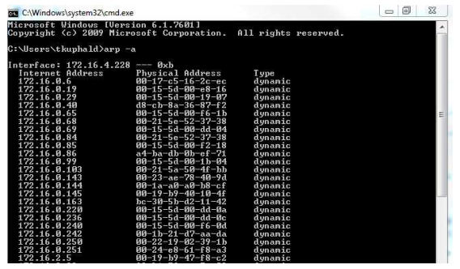
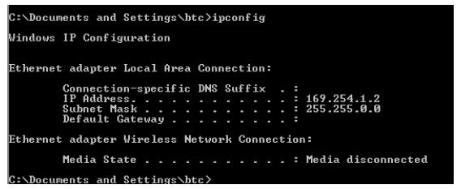
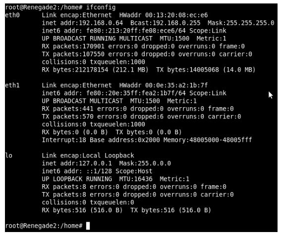
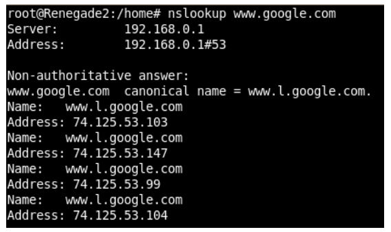
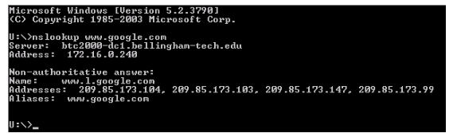
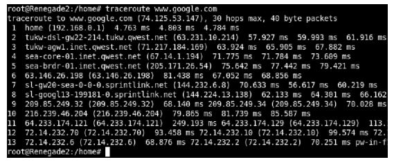
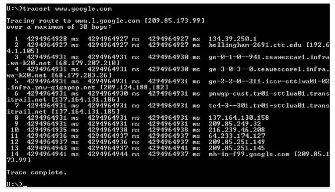
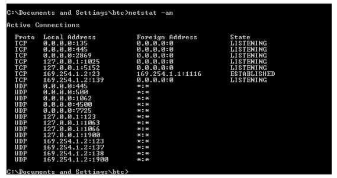

The original, as published: Tony R. Kuphaldt, Lessons In Industrial Instrumentation, ARP, DNS, diagnostic utilities, TCP and UDP. CC BY 4.0, https://creativecommons.org/licenses/by/4.0/. Imported as published, from https://www.ibiblio.org/kuphaldt/socratic/sinst/book/liii.pdf https://www.ibiblio.org/kuphaldt/socratic/sinst/book/liii.pdf
While Internet Protocol (IP) provides a universal addressing standard for devices operating on largescale digital networks, individual devices usually possess MAC addresses unique to each device. As mentioned in a previous section, IP addresses are to MAC addresses as mailing addresses are to Social Security numbers: the IP address serves to route information sent over the network, while MAC addresses identify the individual devices themselves. Any digital network system dealing with both types of addresses must somehow “map” each MAC address to a corresponding IP address, and this is handled by a protocol called Address Resolution Protocol, or ARP. Every node running the ARP protocol on a digital network maintains a table of equivalent addresses, MAC to IP. This table is called the ARP cache, the contents of which may be displayed by running the following command on the device’s command-line interface:
arp -a
The arp -a command instructs the machine to print all (-a) ARP cache entries to the screen for your viewing. This, of course, only displays what that machine happens to know at that time. If the ARP cache has not been updated recently, addressing data found in the ARP cache may be out of date or even missing. Here is a partial screenshot of the arp -a command run on a Microsoft Windows computer, showing each IP (“internet”) address in the ARP cache and its corresponding MAC (“physical”) address:

One way to update the ARP cache on a machine with a command-line interface is to first issue a broadcast68 ping request. Responses from active nodes on the network will populate the machine’s
68The “ping” command is often used to test the response of a single IP node on a network, by issuing the command followed by the IP address of interest (e.g. ping 192.168.35.70). By contrast, a “broadcast” ping request attempts to contact a range of IP addresses within a subnet. For example, if we wished to ping all the IP addresses beginning with 192.168.35, we would issue the command with all 1’s in the last octet of the IP address field (e.g. ping 192.168.35.255).
ARP cache with address information, after which you may run the arp -a command to display those cache entries.
The acronym DNS actually stands for two related things: Domain Name System and Domain Name Server. The first meaning of “DNS” refers to the system of exchanging numerical IP addresses with alphanumeric Uniform Resource Locators (URLs) which are easier for human beings to remember. When you use web browser software to navigate to a web site on the Internet, you have the option of entering the URL name of that site (e.g. www.google.com) or a numerical IP address (e.g. 75.125.53.104). Special computers connected to the Internet called Domain Name Servers, and Domain Name Resolvers (DNRs) use the Address Resolution Protocol (ARP) to convert your target web site name to its actual IP address so that a connection may be made between that computer and yours. ICANN, the same organization responsible for allotting IP addresses, also maintains databases for all registered domain names.
In addition to ping and arp, another utility program useful for troubleshooting network connections from a Microsoft Windows computer’s command line interface69 is ipconfig.
When executed, ipconfig returns a listing of all available (configured and operating) network interfaces on that computer:

69In UNIX-based operating systems the program used to access the command line is often called terminal or xterm. In Microsoft Windows systems it is simply called cmd.
The equivalent command for UNIX operating systems is ifconfig, shown in this screenshot:

Some of the more interesting details contained in the output from ifconfig are the IPv6 addresses (in addition to IPv4 addresses), Ethernet MAC addresses (listed as “hardware addresses” or HWaddr), Ethernet performance data (e.g. number of collisions), IP performance data (e.g. number of IP packets received and transmitted), and details on the “loopback” address (IPv4 127.0.0.1 or IPv6 ::1).
A utility intended to reveal the DNS name of a computer given its IP address, or visa versa, is nslookup. The same command works on Microsoft Windows and UNIX operating systems alike. Here, we see the UNIX version used to identify four IP addresses of the popular Google search engine web site, followed by the Microsoft Windows version:


Another utility used to explore network connections is traceroute (spelled tracert on Microsoft Windows operating systems). This utility sends a test packet to the designated destination address, returning information on all the “hops” the IP packet takes between computers along the network to reach its destination and the amount of time taken to make the trip. Execution of traceroute on a UNIX computer and tracert on a Microsoft Windows computer are shown here:


Datagram Protocol (UDP)
At the next OSI Reference Model layer (layer 4) is a set of protocols specifying how reliable communication “connections” should be established between devices on a digital network. Rather than specifying addresses for routing data packets on a large network (OSI layer 3), layer 4 works on the level of virtual data “ports” at the transmitting and receiving devices. The purpose of these virtual ports is to manage multiple types of data transactions to and from the same IP address, such as in the case of a personal computer accessing a web page (using HTTP) and sending an email message (using SMTP) at the same time. An analogy to help understand the role of ports is to think of multiple packages delivered to different people at a common address such as a business office. The mailing address for the office is analogous to the IP address of a computer exchanging data over a network: it is how other computers on the network “find” that computer. The personal or department names written on the different packages are analogous to virtual ports on the computer: “places” within that node where specific messages are directed once they arrive. Transmission Control Protocol ( TCP) and User Datagram Protocol (UDP) are two methods used to manage data flow through “ports” on a DTE device, with TCP being the more complex and robust of the two. Both TCP and UDP rely on IP addressing to specify which devices send and receive data, which is why you will often see these protocols listed in conjunction with IP (e.g. TCP/IP and UDP/IP). TCP and UDP are both useless on their own: a protocol specifying port locations without an IP address would be as meaningless as a package placed in the general mail system with just a name but with no street address. The combination of an IP address and a TCP or UDP port number is called a socket. Conversely, IP anticipates the presence of a higher-level protocol such as TCP or UDP by reserving a portion of its “datagram” (packet) bit space for a “protocol” field70 to specify which high-level protocol generated the data in the IP packet.
TCP is a complex protocol specifying not only which virtual “ports” will be used at the sending and receiving devices, but also how data integrity will be guaranteed. Data communicated via TCP are sent in blocks of bits called segments. In the same way that the IP algorithm encapsulates data into self-contained “packets” with the necessary routing data to ensure proper delivery to the destination, the TCP algorithm encapsulates data with “header” bits specifying such details as sequence number, acknowledgment identification, checksum (for error-detection), urgency of the message, and optional data. TCP takes responsibility for ensuring both devices on the network are ready to exchange data, breaks the data block into segments of an appropriate size to be encapsulated inside IP packets on the transmitting end, checks each segment for corruption (using the CRC method) upon receipt, reassembles those segments into the whole data block at the receiving end, and terminates the connection between devices upon completion. If a TCP segment successfully arrives at the receiving device, the TCP protocol running at the receiving device acknowledges this to the transmitting device. If the transmitting device fails to receive an acknowledgment within a specified time, it automatically re-sends the segment. If a TCP segment arrives corrupted, the TCP protocol running at the receiving device requests a re-send from the transmitting device. TCP thus fulfills the task of the author and publisher in the manuscript analogy, handling the disassembly and reassembly of the manuscript. In rigorously checking the integrity of the data transfer, TCP’s functionality is akin to sending each manuscript package via certified mail where the author may
70Both IPv4 and IPv6 reserve eight bits for this purpose. track the successful delivery of each and every package. Another feature of TCP is end-to-end flow control, enabling the receiving device to halt the incoming data stream for any reason, for example if its buffer memory becomes full. This is analogous to the XON/XOFF control signals used in simple serial communication protocols such as EIA/TIA232. In the case of large networks, TCP flow control manages the flow of data segments even when the communication paths are dynamic and liable to change. If IP (Internet Protocol) is the “glue” that holds the Internet together, TCP (Transmission Control Protocol) is what makes that glue strong enough to be practically useful. Without TCP, data communication over the wildly disparate physical networks that comprise the world-wide Internet would be far less reliable.
UDP is a much simpler protocol for managing data ports, lacking not only the segment sequencing of TCP but also lacking many of the data-integrity features of TCP. Unlike TCP, the UDP algorithm does not sequence the data block into numbered segments at the transmitting end or reassemble those numbered segments at the receiving end, instead relegating this task to whatever application software is responsible for generating and using the data. Likewise, UDP does not error-check each segment and request re-transmissions for corrupted or lost segments, once again relegating these tasks to the application software running in the receiving computer. It is quite common to see UDP applied in industrial settings, where communication takes place over much smaller networks than the world-wide Internet, and where the IP data packets themselves tend to be much smaller as well. Another reason UDP is more common in industrial applications is that it is easier to implement in the “embedded” computer hardware at the heart of many industrial devices. The TCP algorithm requires greater computational power and memory capacity than the UDP algorithm, and so it is much easier to engineer a single-chip computer (i.e. microcontroller) to implement UDP than it would be to implement TCP. Information-technology professionals accustomed to the world of the Internet may find the use of UDP rather than TCP in industrial networks alarming. However, there are good reasons why industrial data networks do not necessarily need all the data-integrity features of TCP. For example, many industrial control networks consist of seamless Ethernet networks, with no routers (only hubs and/or switches) between source and destination devices. With no routers to go through, all IP packets communicated between any two specified devices are guaranteed to take the exact same data path rather than being directed along alternate, dynamic routes. The relative stability and consistency of communication paths in such industrial networks greatly simplifies the task of packetreassembly at the receiving end, and makes packet corruption less likely. In fact, many industrial device messages are short enough to be communicated as single IP packets, with no need for data segmentation or sequencing at all!
A noteworthy exception to the use of UDP in industrial applications is FOUNDATION Fieldbus HSE (High-Speed Ethernet), which uses TCP rather than UDP to ensure reliable transmission of data from source to destination. Here, the designers of FOUNDATION Fieldbus HSE opted for the increased data integrity offered by TCP rather than use UDP as may other industrial IP-based network protocols do.
Using another utility program on a personal computer called netstat (available for both Microsoft Windows and UNIX operating systems) to check active connections71, we see the various IP addresses and their respective port numbers (shown by the digits following the colon after the IP address) as a list, organized by TCP connections and UDP connections:

An interesting distinction between TCP and UDP is evident in this screenshot. Note how each of the TCP connections has an associated “state” (either LISTENING or ESTABLISHED), while none of the UDP connections has any state associated with it. Recall that TCP is responsible for initiating and terminating the connection between network devices, and as such each TCP connection must have a descriptive state. UDP, on the other hand, is nowhere near as formal as TCP in establishing connections or ensuring data transfer integrity, and so there are no “states” to associate with any of the UDP connections shown. Data arriving over a UDP connection simply shows up unannounced, like an impolite guest. Data arriving over a TCP connection is more like a guest who announces in advance when they will arrive, and also says “good bye” to the host as they depart. Many different port numbers have been standardized for different applications at OSI Reference Model layers above 4 (above that of TCP or UDP). Port 25, for example, is always used for SMTP (Simple Mail Transfer Protocol) applications. Port 80 is used by HTTP (HyperText Transport Protocol), a layer-7 protocol used to view Internet “web” pages. Port 443 is used by HTTPS, an encrypted (secure) version of HTTP. Port 107 is used by TELNET applications, a protocol whose purpose it is to establish command-line connections between computers for remote administrative work. Port 22 is used by SSH, a protocol similar to TELNET but with significantly enhanced security. Port 502 is designated for use with Modbus messages communicated over TCP/IP.
71In this particular case, I typed netstat -an to specify all (a) ports with numerical (n) IP addresses and port numbers shown.